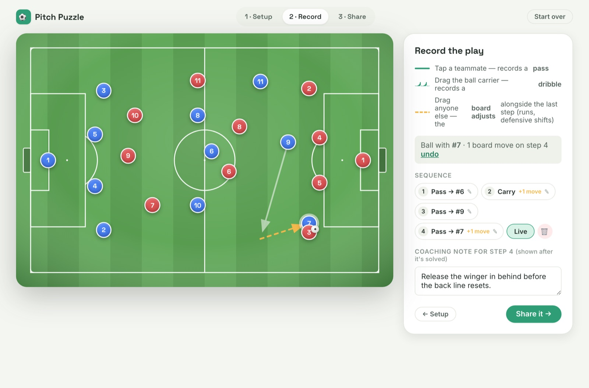
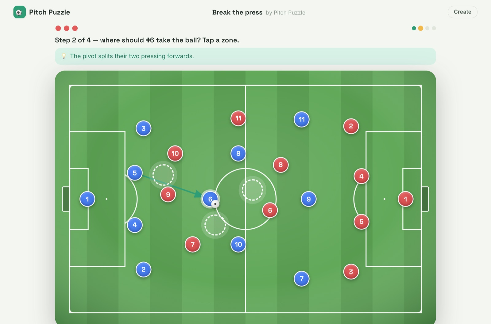
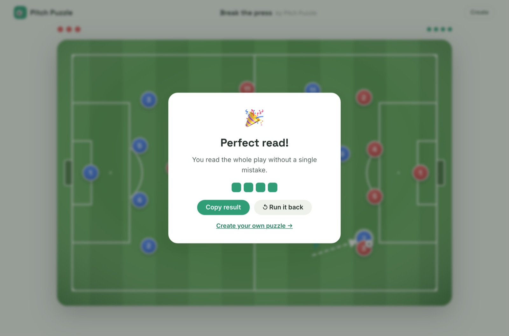

Overview
A web app where football coaches build tactical puzzles — set up a formation, record the correct sequence of passes, dribbles and runs — and share them as a single link. The whole puzzle is compressed into the URL itself, so there is no backend and no signup. Players solve it step by step with a limited mistake budget and get a Wordle-style shareable result.
1 · Create — record the play by playing it
A coach lays out both teams from formation templates or by tap-to-place, then records the play by direct manipulation: tap a teammate to record a pass, drag the ball carrier to record a dribble, drag anyone else and the board reshapes alongside the step (runs, defensive shifts). A scrubbable timeline shows every step, and a coaching note can be attached to each one.

2 · Share — the link is the database
The full puzzle — 22 players, the multi-step sequence, metadata, and the mistake budget — is lz-string-compressed into the URL hash, typically 600–900 characters. The wire format is versioned, so old links keep working as the app evolves. No server ever sees or stores a puzzle.
3 · Play — one decision per step
Anyone opening the link plays the sequence one decision at a time: pick the right receiver for a pass, or the right zone for a dribble among decoys. Solid arrows are passes, wavy arrows are dribbles, dashed arrows are runs, and the board animates between decisions. Dribble decoys are generated deterministically from the puzzle content, so every recipient sees the identical puzzle with zero extra bytes in the link. Run out of mistakes and the full solution animates; solve it and you get a copyable emoji scorecard.


Technical notes
- URL as database — versioned compact schema, quantized coordinates, lz-string compression; a decode → validate → migrate pipeline means broken or future links fail gracefully.
- Derived-state sequence engine — positions at any step are computed from initial placements plus the step list, never snapshotted, so editing, scrubbing, playback and the failure-reveal all share one pure function.
- Deterministic decoy generation — a seeded PRNG (FNV-1a + mulberry32) keyed only on content that is frozen once recording starts, so previewed decoys never shift.
- Responsive canonical coordinates — one 0–1000 coordinate space mapped through a single projection; on phones the pitch renders vertically instead of shrinking.
- Zero runtime dependencies beyond React and lz-string — hand-rolled hash router, reducer state, CSS-transition animation; 19 unit tests on the pure core.